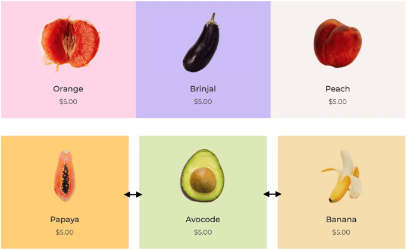

Margin is what creates the gapping(space) outside and around the element/content blocks borders. It pushes the content away from any border/side by a distance 'x' quantified by a px value. Margin is also used to create spacing between two elements or 'breathing space' between products
Between margin and padding is another parameter - border. It will adjust together with padding and margin. But it's what sets them apart. Also, it's the only “visible” parameter of all these. Others create a space with what's already there.
Padding is the increased space inside the content area. It will make the whole block bigger but from the inside.
When to use padding: To create a gap between the edges of the container and the content in it; You want to increase the size of the content block, or create a bigger space within the border; Increase the size of the content block without making the content itself bigger;
Example: You have a button and you want to make it bigger. Add padding!